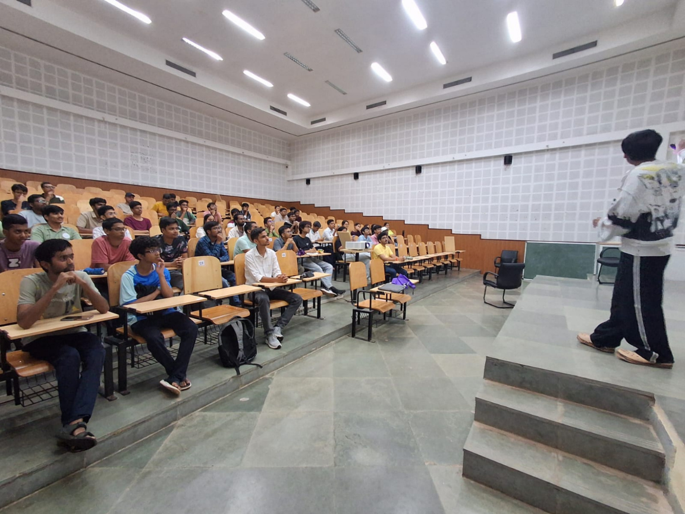
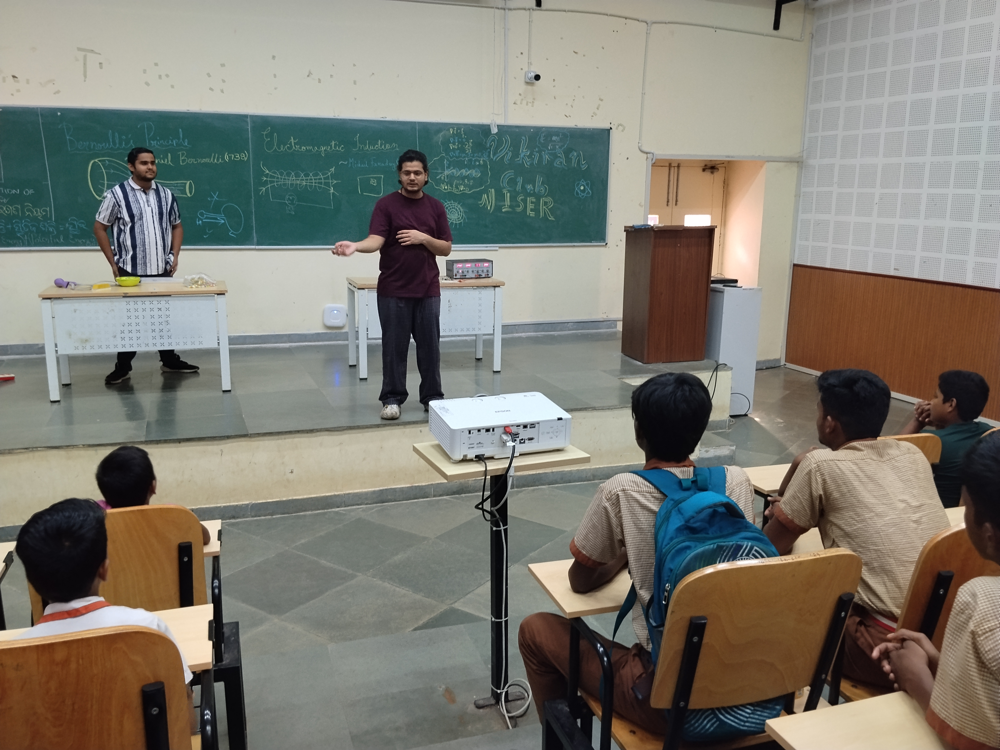
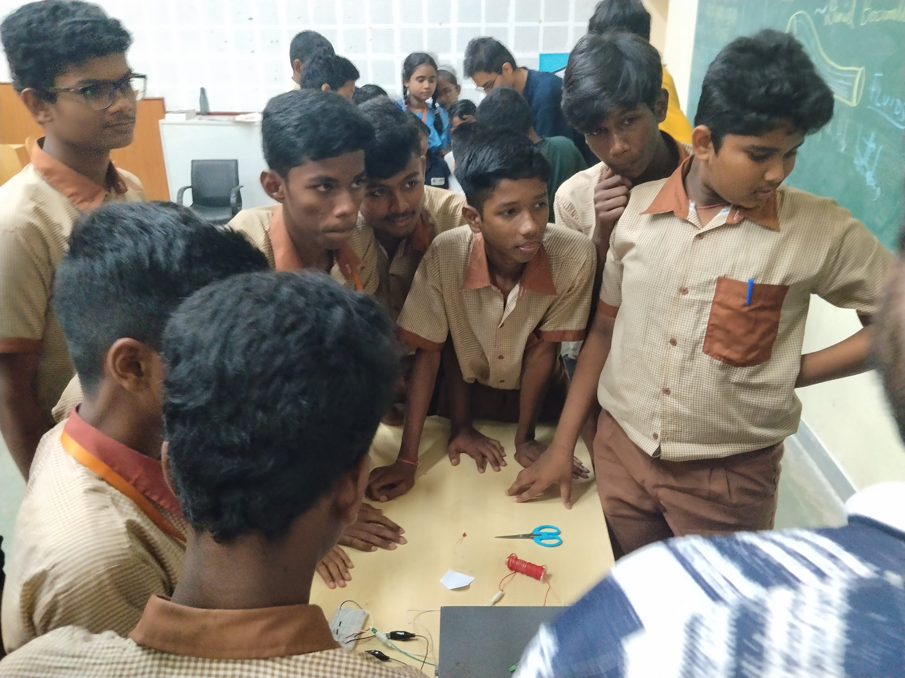
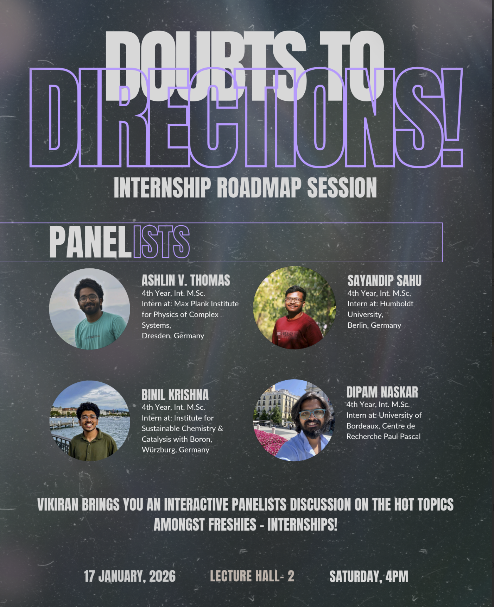
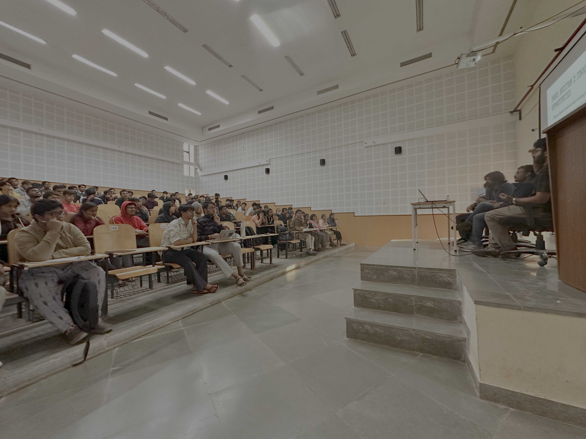

All the events conducted by Vikiran
All the events conducted by Vikiran

In Vikiran Club, weekly talks are organized on Fridays. As "vikiran" means rays of sunlight, these talks aim to increase our knowledge and love of physics, illuminating our minds just as sunlight brightens the world.
Each session features esteemed professors, industry experts, and passionate students who share insights on various physics topics, from classical mechanics to cutting-edge quantum research.
These discussions not only deepen our understanding but also foster a sense of community and curiosity among members.
Join us every Friday to explore the wonders of physics, engage in thought-provoking discussions, and be part of a vibrant intellectual community.
Our talks cover a wide array of subjects, such as the mysteries of black holes, the elegance of theoretical models, and the latest advancements in experimental physics.
These sessions provide an excellent platform for networking, idea exchange, and collaborative learning. Whether you're a seasoned physics enthusiast or just beginning your journey, Vikiran Club's weekly talks offer something for everyone.


Vikiran, the physics club at National Institute of Science Education and Research, recently hosted an engaging physics exhibition aimed at students and faculty members' children.
The event featured a variety of interactive experiments and theoretical presentations, bringing the wonders of physics to life.
The exhibition showcased a range of interactive demonstrations that illustrated fundamental physics principles. Visitors had hands-on experiences with experiments in mechanics, electromagnetism, and quantum physics, sparking curiosity and deeper understanding.
Alongside practical displays, attendees were treated to presentations on cutting-edge physics theories, presented in an accessible manner by esteemed professors from the physics department.
Their expertise enriched the learning experience, fostering discussions and answering questions from curious minds.
The event received enthusiastic feedback, with participants expressing newfound interest and appreciation for physics.
Vikiran's physics exhibition successfully bridged the gap between theory and practice, celebrating scientific curiosity and discovery.


The Internship Session organized by Vikiran provides students with an opportunity to learn about different research and internship opportunities in physics and related fields.
The session aims to help students understand how to approach research opportunities, choose suitable areas of interest, and prepare for internships at different institutes and research laboratories.
Through discussions and interactions with experienced students, participants can gain useful insights into the process of applying for internships and beginning their research journey.


Electrologic was a collaborative event organized by Vikiran Physics Club and RTC Club, bringing together the exciting worlds of Physics and Robotics. Through a series of fun, interactive activities and challenges, participants explored physics-inspired concepts while engaging with robotics and technology.
The event aimed to make learning more enjoyable and interactive, encouraging participants to think, experiment, and have fun while discovering the connection between Physics and Robotics.

The Vikiran Physics Club at National Institute of Science Education and Research (NISER) recently hosted Scientia, an exhilarating quiz competition that drew enthusiastic participants from across the campus.
The event featured multiple challenging rounds, including numerical problems, conceptual questions, and practical applications of physics.
Students showcased their knowledge and problem-solving skills, creating an atmosphere of excitement and camaraderie.
The rounds tested participants' ability to think critically, apply concepts, and perform under pressure. From solving intricate numerical problems to tackling rapid-fire questions and addressing real-world scenarios, the quiz covered a wide range of physics topics.
Esteemed professors from the physics department served as judges, adding prestige and sharing valuable insights.
The event concluded with a grand ceremony honoring the top teams, who were awarded certificates and prizes for their achievements.
Beyond the tangible rewards, Scientia fostered a deeper appreciation for physics, inspiring participants to explore the subject further.
Vikiran, the dynamic physics club at the National Institute of Science Education and Research (NISER), recently hosted an innovative and entertaining meme-making competition.
This event brought together students to blend humor with science, creating a unique platform to express their love for physics through memes.

Winner - Shuvayu Roy

Special Mention - Sujal Sinha